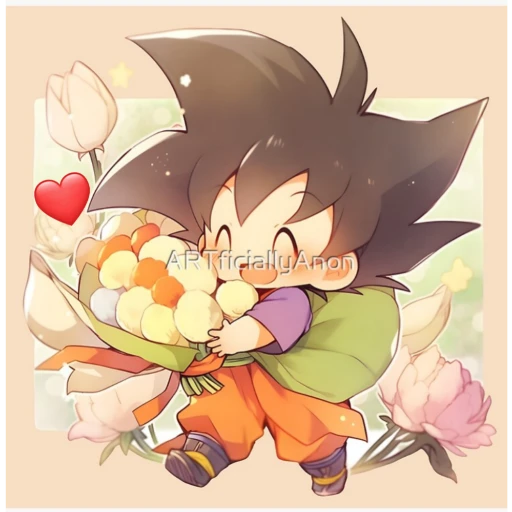

Valeria 🦖
I mean it.Your beautiful, the way i fell for you was gradual and even i didnt expect falling for you at the beginning yet it was across the months we spent together the conversations, your personality, your presence is what captivated me.Ever since i moved ive come to miss you so much i miss everything we used to do and to be honest everything i come across reminds me of you, ive always thought about the what ifs what if she was here, like the other day i was making pins and i know that you wouldve loved making that. Till this day i still get nervous or doubt my words everytime we talk and really thats why Ive refrained from speaking what was on my mind for months i didnt want to ruin such a beautiful and real connection as well as i dont know how you feel but either way i respect it. But anyways this confession is not me giving you an ultimatum im just telling you whats on my mind. :]
PS: Its corny I know
-Marc 